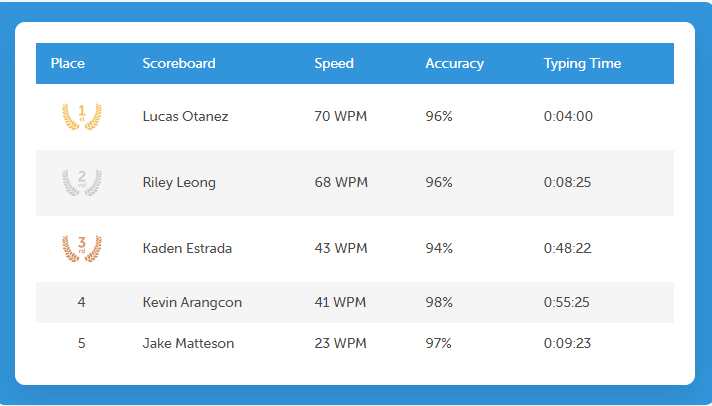

Scratch: My Bean Game
I coded this short game in Scratch. Cross the river of beans. Avoid falling in the beans, unless you want to suffer failure in a river of baked beany goodness.

Python Collaborative Task
My AP Computer Science group and I coded this picture in python! Diao Ren is Mandarin for "Fall Guy," as in the once-popular online video game: Fall Guys.

Genius Hour: Typing!
I have been taking Typing.com's typing class for my Genius Hours in my AP Computer Science class. I used to type 65 WPM, without touch typing. Now, after beginning to learn touch typing, I average 75 WPM.